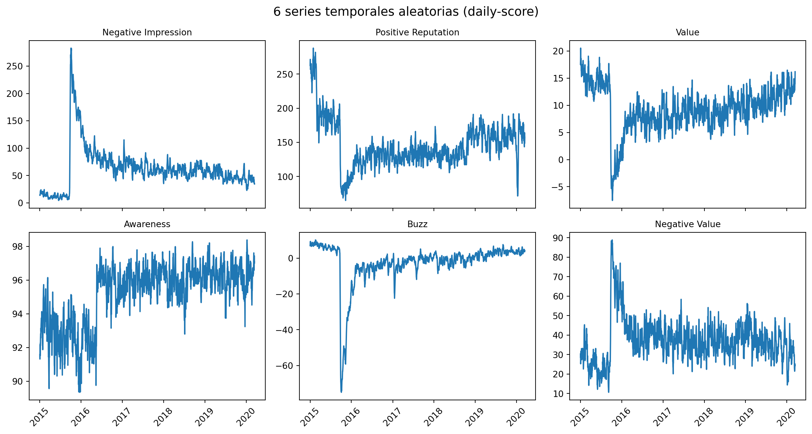
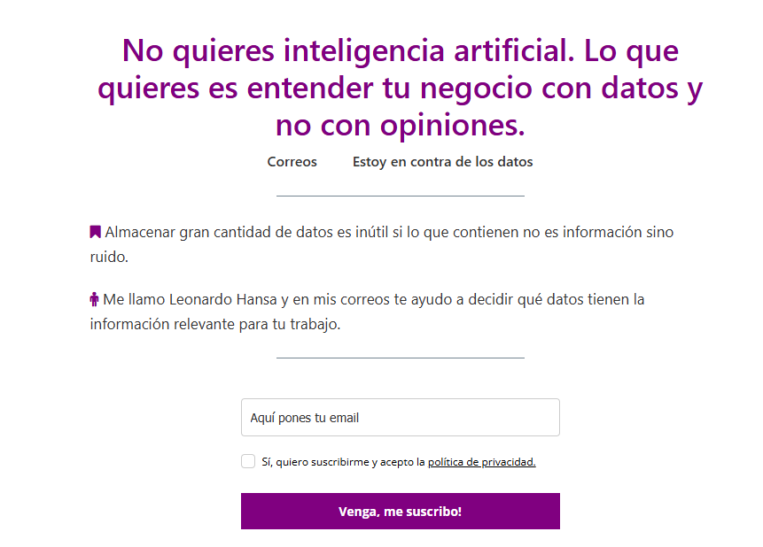
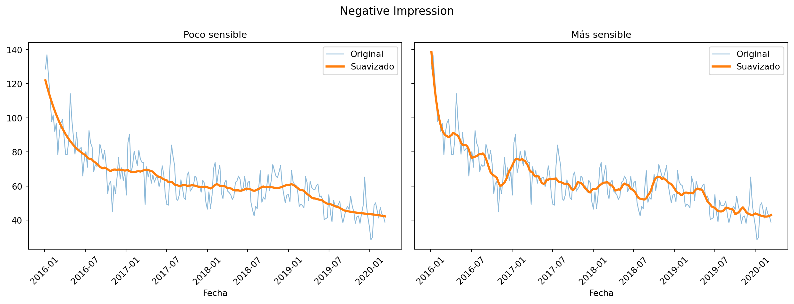
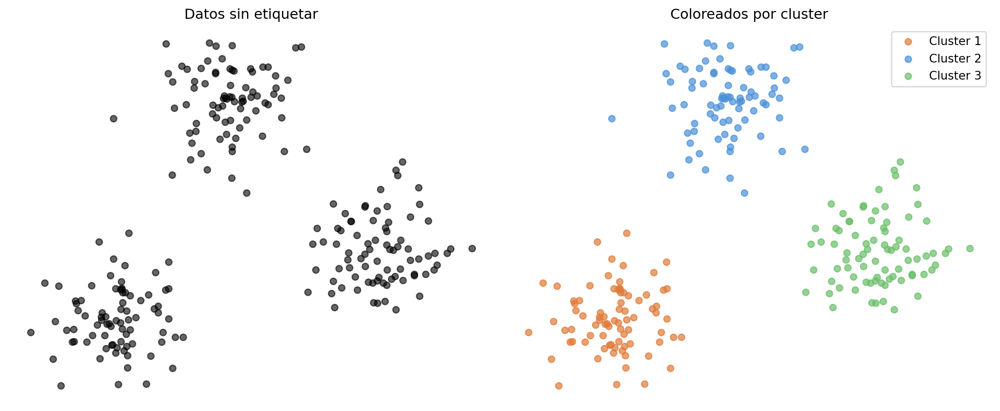
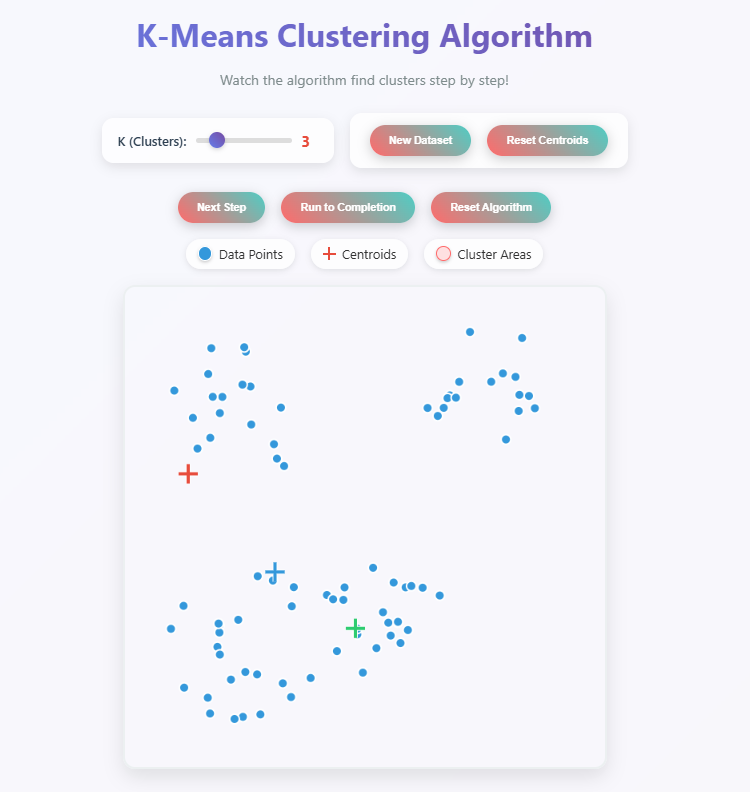
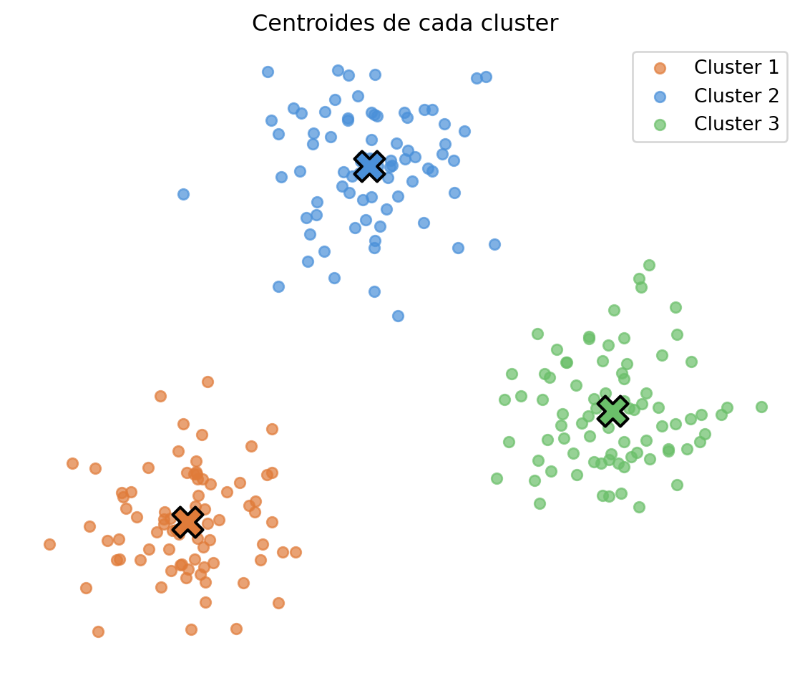
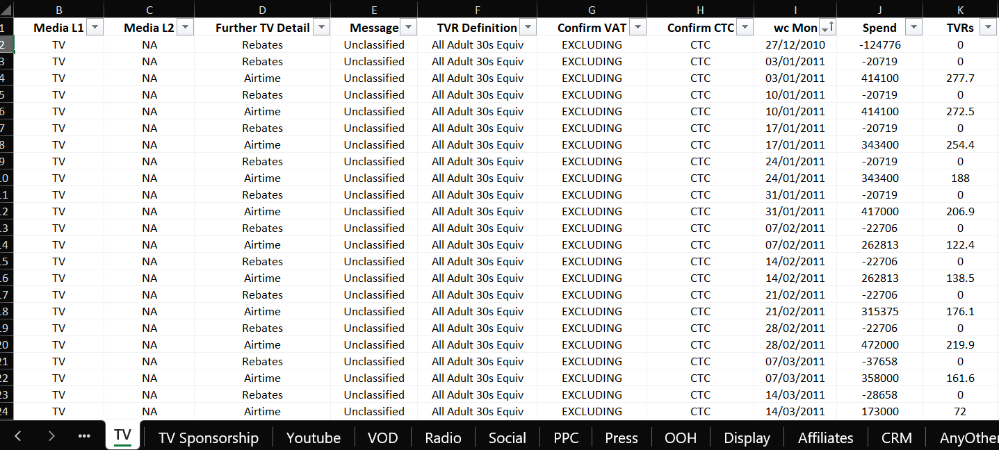

La IA hará tu trabajo, pero tú tendrás que defenderlo
2 casos de uso no tanto para hacer, sino para defender
Leonardo Hansa
5/6/2026
¿Cuál es la situación actual en análisis de datos?
La IA está haciendo cada vez más y más trabajo
¿Pero quién es el responsable de ese trabajo?
Tú
La consecuencia de eso es que te tocará:
- Presentar tu trabajo
- Explicar tu trabajo
- Defender tu trabajo
En este módulo practicarás eso
Ingredientes del módulo
- 2 casos de uso
- Implementación por equipos
- Presentación de casos
Evaluación el caso 1
Resumen
- Solución presentada
- Exposición
- Tribunal
Evaluación del caso 2
Resumen
Ya hablaremos de ello…
Resumen
…pero la idea rápida es que te tocará redactar.
Sesiones
Cómo quiero repartir las sesiones
- 5 y 6 de junio:
- presentación del caso 1
- trabajo en equipo del caso 1
- 12 de junio:
- exposiciones del caso 1
- presentación del caso 2
- 10 de julio:
- trabajo en el caso 2
- entrega en el caso 2
Material guía

Caso 1. Agregación de métricas
Empiezo con detalles de la evaluación
Solución presentada
- 35%
- Misma nota para cada miembro
- Se valorará:
- calidad técnica
- validez de la solución
Exposición
- 35%
- Individual
- Se valorará:
- claridad
- storytelling
- defensa frente a las preguntas
Tribunal (pregunta a otro equipo)
- 10%
- Individual
- Se valorará:
- La pertinencia
- La originalidad
- La capacidad de generar debate
Problema de partida
Tenemos demasiadas métricas. El objetivo es unificarlas
Fases
- Paso de diario a semanal
- Suavizado de las series temporales
- Cálculo de la correlación entre las métricas
- Clustering jerárquico para agrupar las métricas
- Análisis de los clusters y cálculo de los centroides
Repito: el objetivo del caso es unificar métricas
O sea, calcular nuevas métricas que sean combinaciones de las existentes.
Por ejemplo, en lugar de 12 métricas habrá solo 3, pero tendrán más o menos la misma información.
Nota
- Muchas de las decisiones serán subjetivas. No hay una única solución correcta
- Ten en cuenta que tendrás que presentar y defender tus decisiones
- Sí, puedes usar IA
1. Paso de diario a semanal
Tarea. Pasa el dato diario a semanal.
Contexto. Cómo se calculan las métricas
| Fecha | Calidad | Calidad positiva | Calidad negativa | Calidad volumen |
|---|---|---|---|---|
| 04/01/2016 | -13.23 | 18.43 | 91.50 | 552.46 |
| 05/01/2016 | -13.02 | 17.54 | 89.67 | 554.07 |
| 06/01/2016 | -14.85 | 16.54 | 100.22 | 563.66 |
| 07/01/2016 | -14.57 | 17.97 | 99.48 | 559.62 |
| 08/01/2016 | -15.15 | 21.26 | 109.15 | 580.06 |
| 09/01/2016 | -17.35 | 18.94 | 121.47 | 590.93 |
| … | … | … | … | … |
Contexto. Cómo se calculan las métricas
\[ \mbox{calidad}_i = \frac{\mbox{calidad positiva}_i - \mbox{calidad negativa}_i}{\mbox{calidad volumen}_i}\times 100 \]
en la fecha \(i\).
¿Cómo se agrega a semanal?
Vía libre. ¿Qué se te ocurre?
2. Suavizado de las series temporales

2. Suavizado de las series temporales
Tarea.
- Suaviza las series temporales para eliminar picos que no aportan información
- Decide el método y explica por qué lo has elegido
3. Cálculo de la correlación entre las métricas
| Buzz | Quality | Impression | Value | … | |
|---|---|---|---|---|---|
| Buzz | 1.00 | 0.73 | 0.85 | -0.12 | … |
| Quality | 0.73 | 1.00 | 0.61 | 0.34 | … |
| Impression | 0.85 | 0.61 | 1.00 | -0.08 | … |
| Value | -0.12 | 0.34 | -0.08 | 1.00 | … |
| … | … | … | … | … | … |
3. Cálculo de la correlación entre las métricas
Tarea.
- Calcula la correlación de cada métrica con todas las demás
- Explica por qué hacemos esto
4. Clustering jerárquico para agrupar las métricas
Tarea.
- Implementa los clusters
- Decide con cuántos te quedas y explóralos
Teoría
Idea general de clustering

El centroide de un cluster es el punto medio, el elemento más representativo

Paradójicamente, el centroide no tiene por qué ser un punto real. Es solo una media
Hay dos filosofías de clustering: jerárquico y particional
Clustering no jerárquico: k-means

https://www.interactive-ml.com/k-means.html
Clustering jerárquico: dendograma

Seguimos con el caso 1…
5. Análisis de los clusters y cálculo de los centroides
Tarea.
- Calcula el centroide. Cada centroide es la agregación de las métricas que representa
- Analiza los centroides. ¿Qué representan? ¿Qué información aportan?
A trabajar
Metodología
- Parejas
- Trabajáis el caso
- Presentación de 20 minutos:
- 12 de junio
- Puedes preguntarme cualquier duda durante el proceso
- Recuerda que no hay una única solución correcta
Comentarios
- El tribunal será otra pareja
- Cada miembro hará una pregunta
- Se valorará (muy) positivamente que la pregunta genere debates
Resumen de la tarea
- Paso de diario a semanal de los datos
- Suavizado de las series temporales
- Cálculo de la correlación entre las métricas
- Clustering jerárquico para agrupar las métricas
- Análisis de los clusters y cálculo de los centroides
- Preparación de la presentación para explicar el proceso y los resultados obtenidos
- Como miembro del tribunal, preparación de pregunta
Caso 2: monitorización de datos
Problema de partida

Problema de partida
- Datos para un análisis a fecha de hoy
- Tiempo después llegan nuevos datos para actualizar el análisis
¿Cómo validar que los nuevos datos son coherentes con los anteriores?
Tarea
- Tu jefe te ha pedido que automatices la validación de los nuevos datos.
- Explora los datos y piensa qué características de los datos es importante supervisar para validar que los nuevos datos se parecen a los anteriores.
- Redacta un correo electrónico para que valide las reglas que se te han ocurrido.
Tarea
- Explora
- Piensa
- Redacta en papel
- Recuerda que puedes preguntarme cualquier duda
- Recuerda que no hay una única solución correcta
La evaluación es individual (20%) pero podéis pensar por equipos
- Cada persona redactará su propio correo electrónico
- Habrá ideas comunes pero tendrán que ser correos diferentes
- Cuenta el 20% del módulo